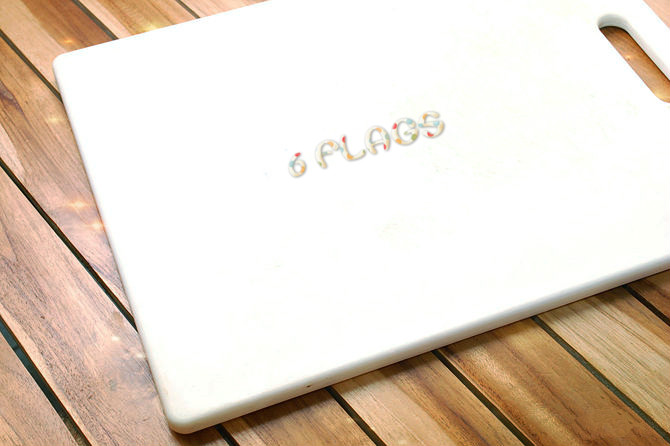
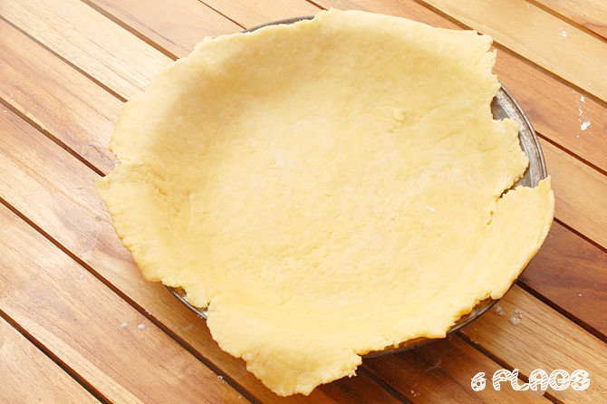
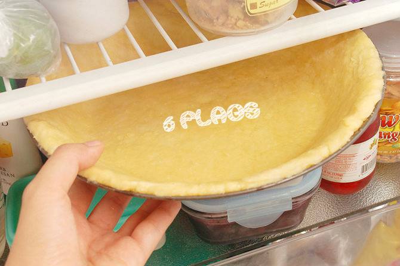
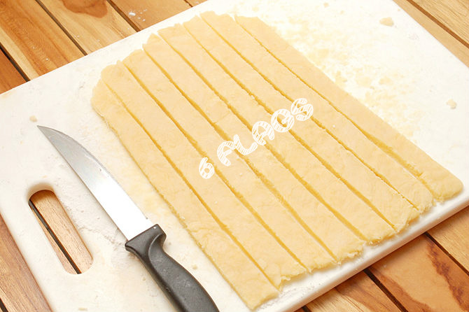
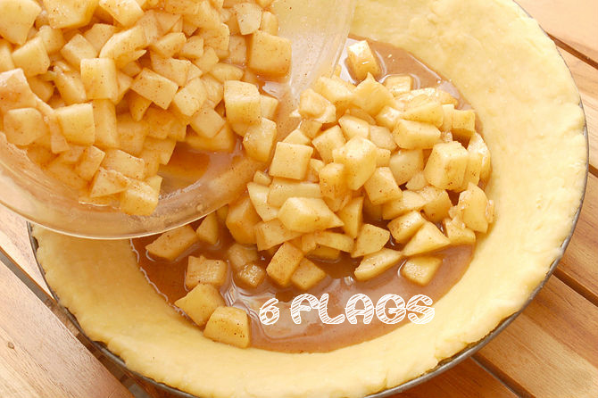

Receta premiada de tarta de manzana casera americana
Ninguna comida es más americana que una tarta americana casera caliente y fresca. La gente ha estado haciendo tartas de manzana desde antes de que los EE.UU. se convirtió en un país. Los peregrinos ingleses trajeron esta deliciosa comida al suelo estadounidense durante los 1500. Desde entonces, este postre se ha convertido en un ícono de la cultura americana. Tartas de manzana comprados al mercado simplemente no se comparan a las caseras. Se necesita algo de tiempo para hacer una tarta de manzana a partir de cero, te aseguramos que vale la pena. En primer lugar, harás una crujiente y escamosa corteza. Luego, la llenarás de manzanas ácidas y frescas y especias como la canela y la nuez moscada. Por último, meterás tiras de la corteza sobre el relleno para hacer un enrejado. Esta receta ha ganado el primer premio en muchas ferias condado de los EEUU. ¡Con nuestra receta, verás que hacer una tarta de manzana casera rica es realmente tan fácil como una tarta!

Ingredientes de la corteza
- 2 tazas de harina
- 1 cucharadita de sal
- 3/4 de una barra de mantequilla
- 5 cucharadas de agua fría
- 1 huevo y un poco de leche (para cepillar, para hacer un esmalte dorado)
Ingredientes del relleno
- 1/3 taza de azúcar
- 1/3 taza de azúcar morena
- 1/4 cucharadita de sal
- 1 cucharadita de canela
- 1/2 cucharadita de nuez moscada
- 3 cucharadas de harina
- 6 a 8 manzanas medianas (Granny Smith para un pastel más agrio, Golden Delicious para una tarta más dulce)
Cómo hacer la tarta
- Precalienta el horno a 400 grados.
- Asegúrate de tener una limpia y amplia encimera disponible para el amasado y el despliegue de la masa.

- Coloca la harina, la sal y la mantequilla en un cuenco grande. Con una batidora de repostería o tenedor, aplasta la mantequilla hasta que forme pequeñas bolas con la harina. Entonces, añade poco a poco el agua.

- Amasa con las manos enharinadas hasta que forme una gran bola de masa. Divide la bola en dos y envuelve una parte en plástico. Coloca la masa envuelta en el refrigerador. Una alternativa es envolver las dos bolas de masa y refrigerarlas por 30 minutos antes de proceder al siguiente paso.

- En una encimera enharinada, empieza a extender la masa en forma de círculo de más o menos 2 pulgadas (5,1 cm) de diámetro más que el molde. Algunos prefieren colocar una capa de envoltura de plástico encima de la masa mientras se rueda para que no se pegaue al rodillo de amasar.

- Levanta lentamente la masa aplastada de la encimera, envolviéndola completamente por el rodillo.

- Desenrolla la masa sobre el molde, cuidando que no se rompa. Colocala en el molde, presionándola por todos los lados.

- Corta los bordes sobresalientes. Deja a eso de 1/4 de pulgada (0,6 cm) de masa extra sobre el molde.

- Coloca el molde de tarta en el refrigerador.

- Haz el relleno. Pela y corta las manzanas en pedazos de 1/8 de pulgada de grosor y córtalas en cubos de 1/2". Ponlas en un gran tazón y with con los azúcares (negro y blanco), sal, jugo de limón, harina, nuez moscada y canela (agita para cubrir cover la superficie mixtura). Coloca en el regrigerador.

- Estira la otra bola de masa en una superficie enharinada, tal como hiciste antes.
Tapa cortada:
Dobla suavemente en dos y haz 4 a 5 rebanadas de media pulgada slices a lo largo del pleigue y 4 rebanadas en el centro de la parte plegada. Estas dejarán que el relleno respire y que no se rompa por los lados. Despliegue la corteza de encima y déjala a un lado.
Tapa enrejada:
Corta la masa estirada en tantas rebanadas de 1" que puedas.

- Saca el molde y el relleno del refrigerador.

- Vierte el relleno en el molde, extiendéndolo con la parte anterior de una cuchara. Debería de haber relleno suficiente para llenar todo el molde y y apilar sobre el borde al menos una pulgada en el centro.

- Cepilla los bordes del molde con un huevo revuelto.

- Echa la corteza superior sobre la tarta.
Tapa cortada: Echa la corteza superior cortada sobre el relleno. Corta las bordes sobresalientes con un cuchillo de mantequilla. Con los pulgares cara a cara, colócalos sobre el borde. Presiona los pulgares hacia si mismos. Haz esto por todo el molde para cerrarlo.
Tapa enrejada: Pon las rebanadas de masa sobre la superficie de las manzanas en un adorno entrecruzado, y encontes, téjelas juntos para crear un efecto enrejado. Corta la masa sobresaliente y presiona los bordes tal como hemos descrito.

- Esparce la leche sobre la parte superior o cepilla el enrejado con el lavado de huevo. Esto ayudará a dorar la corteza. Espare la canela y el azúcar sobre la corteza para un toque extra.

- Hornea a 400ºF (200ºC) por 15 minutos. Baja la temperatura a 375ºF (190ºC) por 45 minutos. -Saca cuando la corteza superior sea café dorado.

- Deja que la tarta se enfríe por 45 minutos hasta una ora a temperatura ambeintal antes de servir.

- ¡Allá está! Una bella tarta de manzana casera!